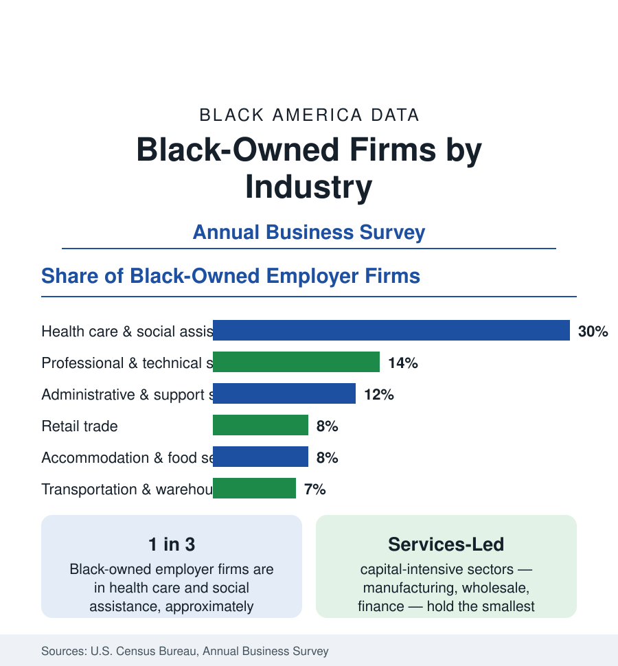

Black Business
Black-Owned Businesses by Industry: Where the Firms Are
Health care and social assistance is the largest industry of Black business — nearly a third of employer firms. The Annual Business Survey industry profile.

The industry distribution of Black-owned businesses — which sectors the roughly 161,000 Black employer firms and three million solo ventures occupy — explains much of the scale data in this section. Black enterprise is a services economy: health care and social assistance alone accounts for nearly a third of Black-owned employer firms, professional services and administrative services follow, and the capital-intensive sectors where America's largest firms live — manufacturing, wholesale trade, finance — hold the smallest Black shares. This article reports the Annual Business Survey's industry profile and what it means for receipts, employment, and growth.
The Leading Sectors
Health care and social assistance leads by a wide margin, at roughly 30 percent of employer firms: physicians' and dentists' offices, home health agencies, childcare centers, counseling and social services — businesses that grow directly out of the occupational profile in the employment section, where health care is the largest field of Black work. Professional, scientific, and technical services — law, accounting, consulting, design, and technology services — follows at roughly 14 percent, and it is the sector where average Black firm receipts run highest among the large categories, reflecting credential-based businesses with scalable billing. Administrative and support services, including staffing, janitorial, security, and business services, contributes roughly 12 percent, much of it built on contracts with larger corporations and governments.
The Consumer Sectors
Retail trade and accommodation and food services each account for roughly 8 percent of employer firms — the storefront economy of restaurants, franchises, beauty retailers, and specialty shops, visible in every Black commercial district in this reference's city profiles. These sectors record the lowest average receipts per firm and the highest failure exposure in downturns, but also the highest rates of new formation: they are the entry industries of Black business, where startup capital requirements are lowest and where the nonemployer universe is densest. Transportation and warehousing, at roughly 7 percent, has grown fastest in recent survey cycles on the strength of trucking — the classic Black entrepreneurial ladder, now extended by logistics and last-mile delivery contracting.
The Thin Sectors
The distribution's other end is as informative. Manufacturing accounts for only about 2 to 3 percent of Black employer firms, wholesale trade for a similar small share, information and finance and insurance for small single-digit shares — despite those sectors holding a large fraction of all American business receipts. The reasons are structural in the data: entry requires capital at scales the wealth figures of this section show Black founders rarely command, supply chains and customer networks are relationship-bound, and the industries are geographically concentrated away from the Black population map. The result is a business sector whose industry mix caps its aggregate receipts: Black firms are densest precisely where firms are smallest.
Receipts Tell a Different Order
Ranked by receipts rather than firm counts, the profile reshuffles. Professional services and health care remain large, but wholesale, manufacturing, and information firms — few as they are — post average receipts several times the Black firm average, so that a disproportionate share of the sector's $183 billion in receipts is produced by a small number of firms in the thin sectors: the large food processors, media companies, financial firms, and technology businesses that appear in this section's profiles of the biggest Black-owned companies. The nonemployer data show the mirror image: millions of firms in personal services, creative work, transportation, and retail producing modest receipts each. Every aggregate about Black business is the sum of these two different economies.
Why the Mix Matters
Industry mix determines the sector's sensitivity to the economy's weather. Services-led, consumer-facing business portfolios contract early in recessions — the pattern visible in the firm-survival data after both the Great Recession and the pandemic shock — and they benefit least from asset booms. They also sit closest to the Black consumer market documented in the buying-power article, which is both their foundation and their ceiling. Policy and capital programs aimed at the sector, from supplier-diversity contracting to community-lender funds, are best read against this map: they succeed or fail sector by sector, and the Annual Business Survey's industry tables are where the results appear.
Summarized: a third of Black employer firms in health and social assistance, an eighth each in professional and administrative services, thin presence where capital requirements are highest, and receipts concentrated in the few sectors where Black firms are scarcest. The industry map is the business data's master key — it explains the sector's size, its risks, and its growth paths in a single table.
More in Black Business
Black-Owned Businesses: Counts, Receipts, and the Representation Gap
About 161,000 Black-owned employer firms and three million solo ventures: how the Census Bureau counts Black business ownership, where firms concentrate, and the gap between population share and business share.
Black Median Net Worth: The Wealth Gap in Federal Reserve Data
The Federal Reserve puts Black median family net worth at $44,900, against $285,000 for White families — about 16 cents on the dollar. The widest gap in economic data.
Black Buying Power: The $1.8 Trillion Consumer Economy
Black buying power is estimated at about $1.8 trillion — larger than the economy of most nations. What the figure measures, who produces it, and what it buys.
Source: U.S. Census Bureau, Annual Business Survey; U.S. Census Bureau, Nonemployer Statistics by Demographics.